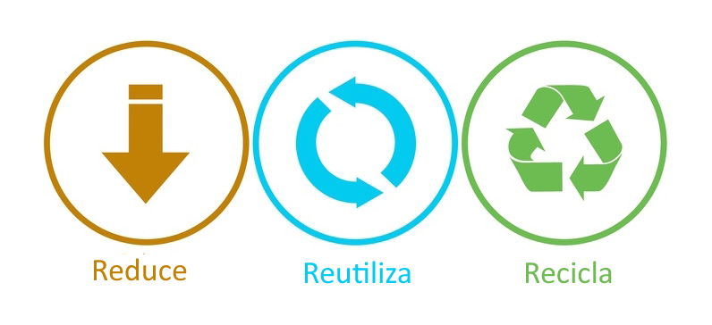

Reducir
Implementar la firma verde promovida por NOMBRE EMPRESA en el mail.
Reutilizar
Reciclar
Todo papel ó cartón que ya no pueda ser reutilizado deberá de tener un tratamiento de reciclaje.
Al acumularse el papel en el área de impresiones, éste de deberá de almacenar en un lugar libre de agua o humedad; lo mismo sucederá para el cartón.
Es responsable de cada sucursal buscar a un proveedor autorizado, que le de el tratamiento adecuado al papel y al cartón; junto con él definirán cada cuando vendrá a recoger lo que se haya acumulado.
Envases y Plástico.
Resumen de Impacto.
Entendemos por Envases y Botes, aquellos materiales tales como latas (refresco, de conserva etc.), botes Tetrabrik y botellas de plástico y de vidrio. Es importante el reciclado de estos materiales pues para fabricarlos, de alguna u otra manera, son los que más contaminan al planeta, pues para producir una tonelada se gasta más de 15,000 Kwh, se producen 5 toneladas de residuos minerales que van al suelo, y vapores que producen lluvia ácida.
El vidrio, se puede reciclar hasta 40 ó 50 veces; en promedio, estos materiales tardan entre 300 y 600 años en degradarse si no se les da un tratamiento especial.